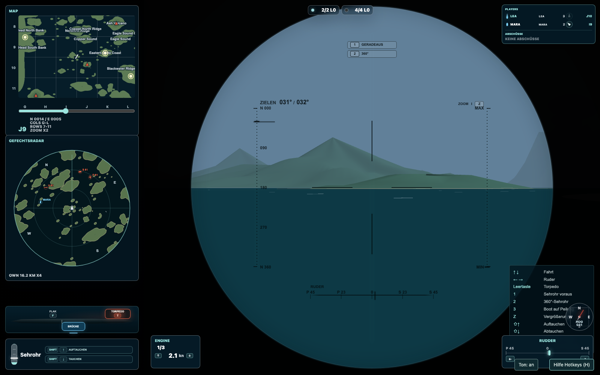

Hilfe für deine aktuelle Situation
H öffnet das Menü Hilfe Hotkeys. Noch einmal H oder Esc schließt es. Die Liste passt sich an Position, Tauchtiefe und verfügbare Funktionen an. Du kannst Positionen und Sehrohrmodi auch über die beschrifteten Schaltflächen der linken Übersicht wählen.
Brücke, Tiefe und Waffen
| Taste | Was sie hier tut |
|---|---|
| ↑ / ↓ | Fahrstufe erhöhen / verringern. Über Stop geht es in die Rückwärtsfahrt. |
| ← / → | Auf der Brücke und im Fahr-/Zielsehrohr Ruder; im 360°-Sehrohr nur den Blick drehen. |
| Umschalt + ↓ / ↑ | Eine Stufe abtauchen / auftauchen. |
| B | Zur Brücke zurück. |
| F | Aufgetaucht an die Flak wechseln. |
| Leertaste / Enter | Torpedo in der passenden Ziel-/Brückenansicht oder die bediente Flak abfeuern. |
| A / Umschalt + A | An der Flak ausrichten / für Flugabwehr vorbereiten; weiter selbst zielen. |
| R | Radaransicht wechseln, soweit verfügbar; die tatsächliche Tiefe bestimmt die mögliche Aufklärung. |
Das Sehrohr-Trio
| Taste | Was sie hier tut |
|---|---|
| 1 | Fahr-/Zielsehrohr nach vorn. Blick und Bug zeigen zusammen. |
| 2 | 360°-Beobachtungssehrohr. Mit links/rechts unabhängig vom Boot suchen. |
| 3 | Boot auf die aktuelle Sehrohrpeilung drehen lassen; danach zurück ins Zielsehrohr. |
| Z | Im jeweiligen Sehrohr die Vergrößerung durchschalten. |
| H / Esc | Tastenhilfe umschalten / schließen. |

Drei kleine Übungen vor dem ersten ernsten Anlauf
- Die Blickrichtung trennen: Im 360°-Sehrohr ein seitliches Ziel suchen, dann mit 1 nach vorn zurück. Beobachte, dass sich der Bootskurs dadurch nicht geändert hat.
- Eine Peilung übernehmen: Mit 2 ein ruhendes Ziel suchen und mit 3 ausrichten. Warte die Drehung ab und prüfe die neue Zielansicht.
- Unter Wasser neu orientieren: Tiefer tauchen, die Sonarkonturen anschauen und wieder auf Sehrohrtiefe zurückkehren. Achte darauf, wann die Anzeige mit der tatsächlichen Tiefe wechselt.